Instor
Um design system para as plataformas da Instor, aplicado em produtos de inspeção industrial e no App Jaci.
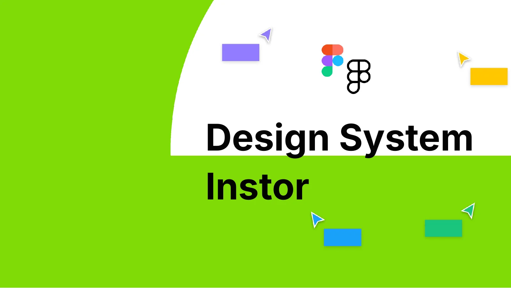
Abordagem
Uma abordagem estratégica para um design escalável.
Tratei o design system como um problema de design: descobrir, definir, desenhar e entregar. Com um time pequeno, todos os criadores também eram consumidores do sistema.
A base veio do design atômico: estilos de texto, variáveis de cor, componentes simples e complexos. As cores são semânticas, com tabela de acessibilidade AA e AAA, e os tokens se dividem em primitivos, semânticos e de componente.
Princípio
“Design systems são a ponte entre designers e engenheiros.”
Processo
Um processo, não um entregável
- 01
Identificar
Padrões, diretrizes e documentação.
- 02
Reduzir e definir
Tokens e componentes, com nomenclatura componente / variante / tamanho / estado / modificador.
- 03
Compartilhar
Handoff com grids, breakpoints, comentários numerados e legenda de status para os devs.
- 04
Manter
Planejar, construir, entregar, adotar e manter.
App Jaci · Freelancer
Um app para operar o robô.
Projeto real que fiz como freelancer: o app que controla o robô Jaci, com onboarding e dois tipos de operação, teleoperado e autônomo.
Pranchas
Do sistema às aplicações
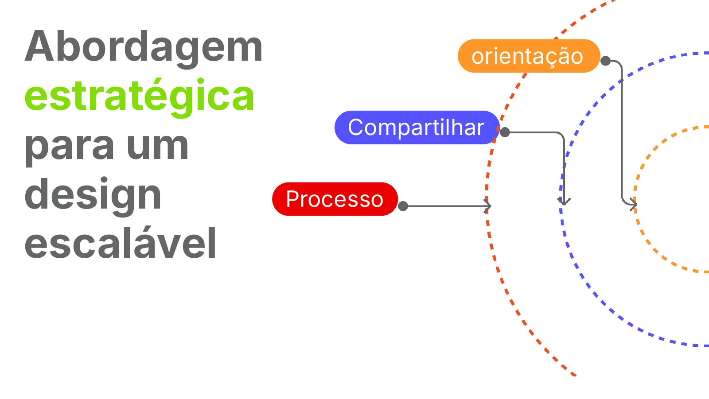
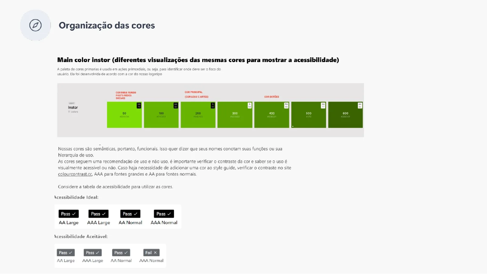
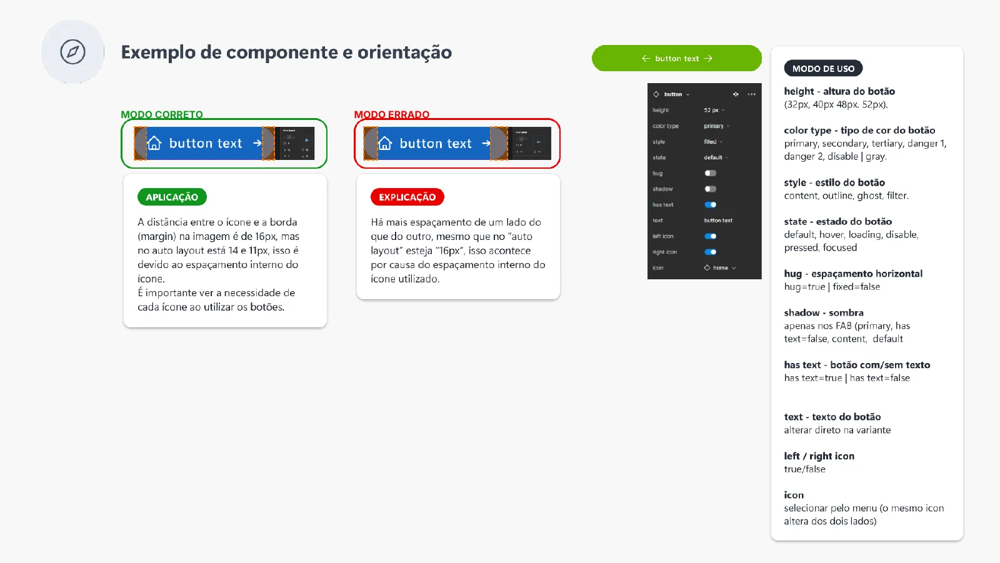
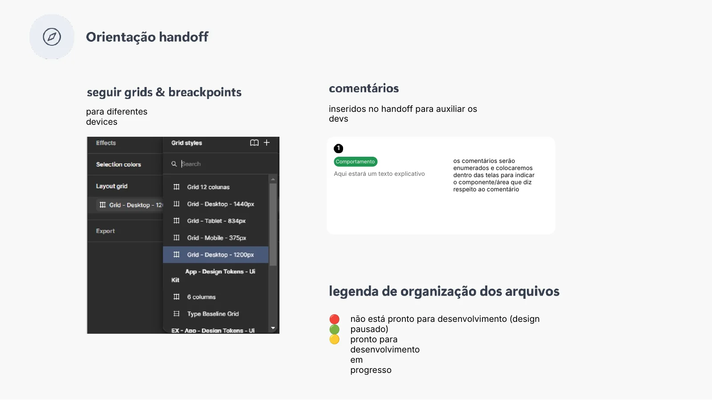
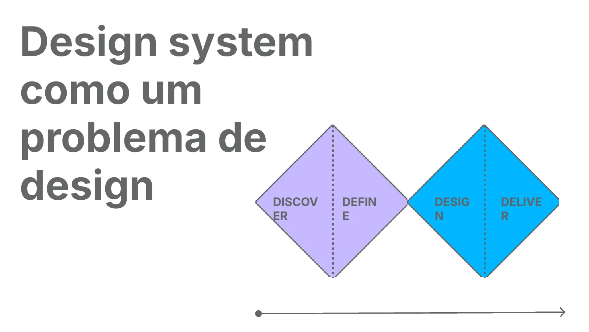
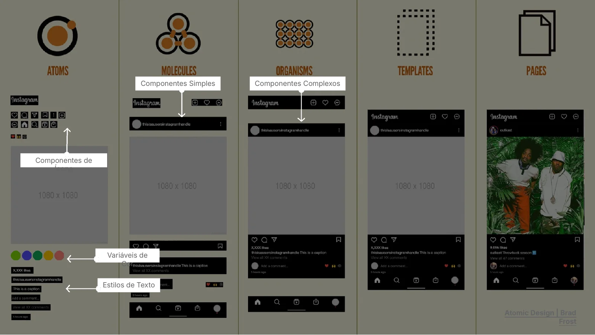
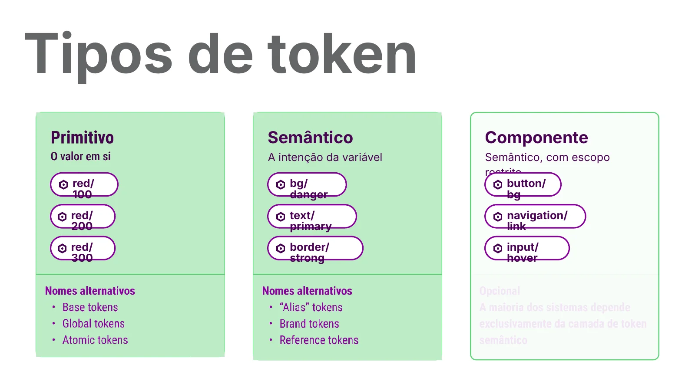
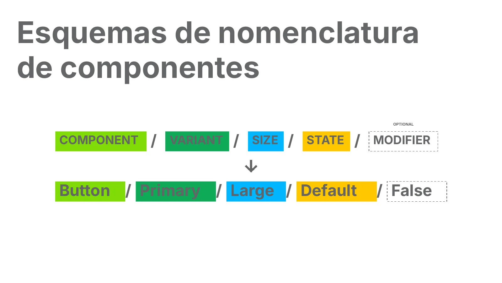
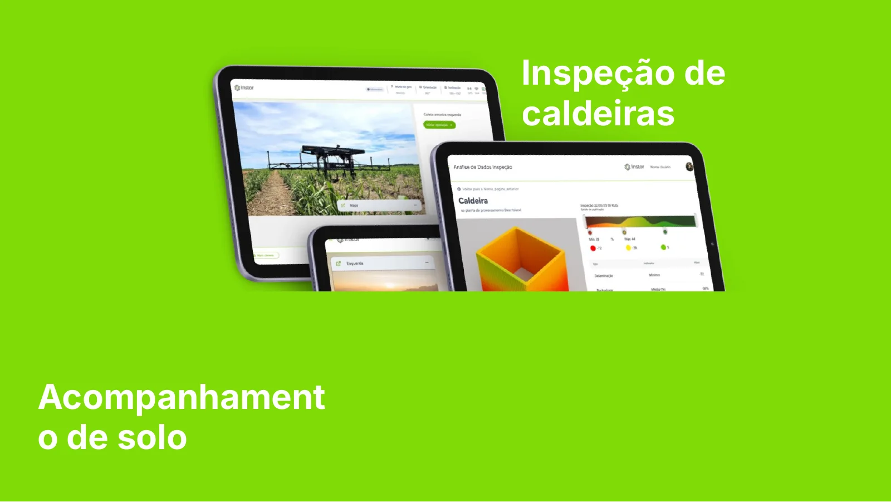
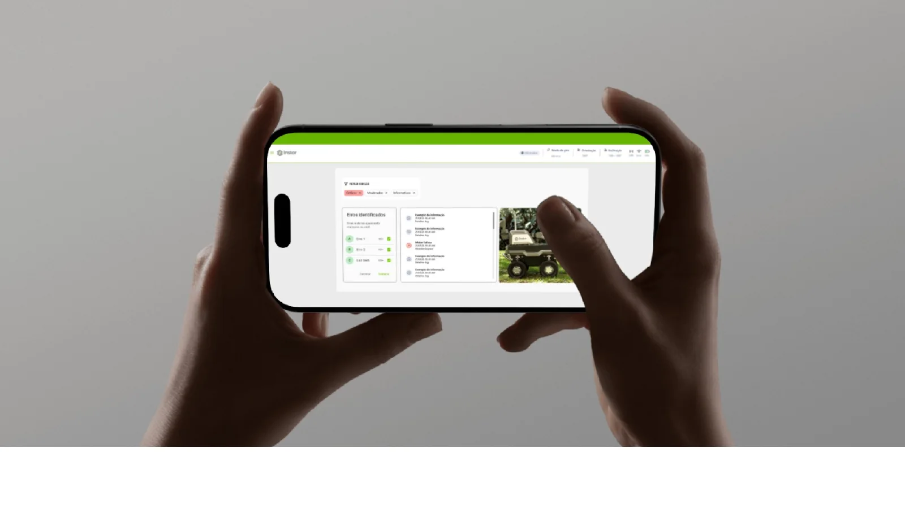
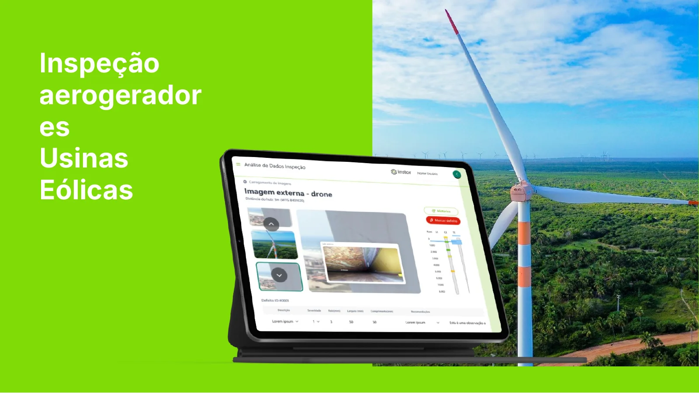
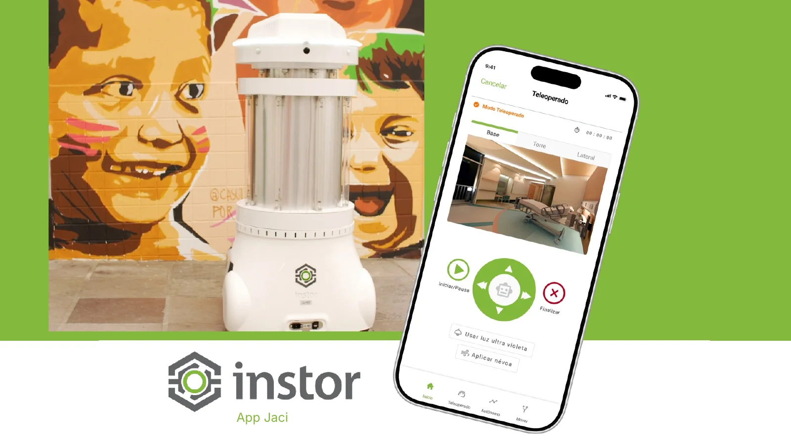
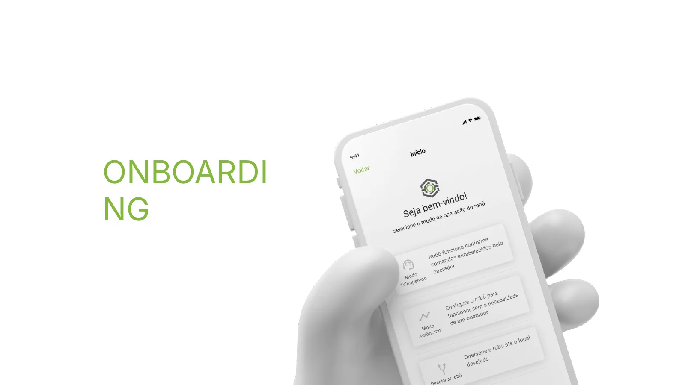
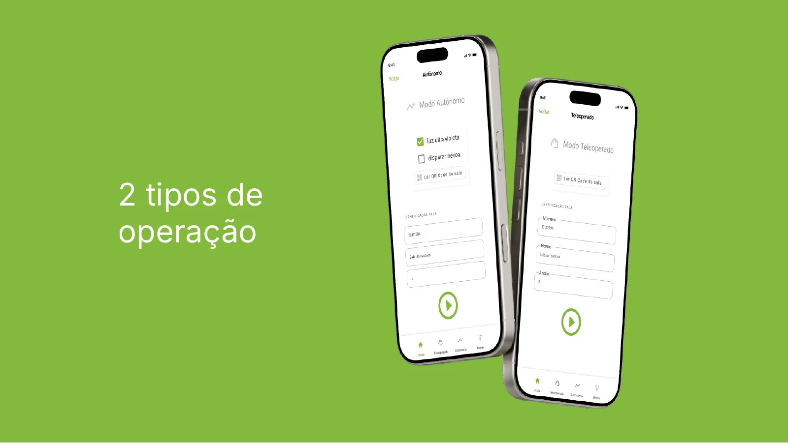
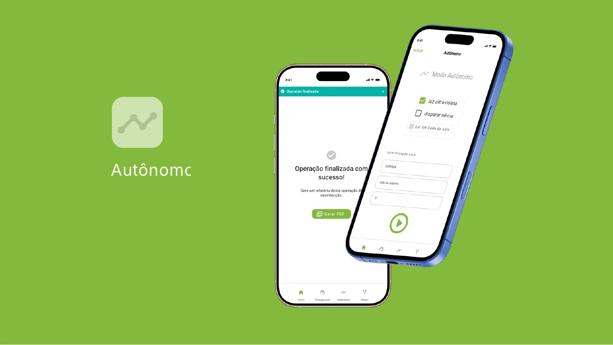
Entregas
Do token ao robô
- Design system
- Tokens
- Componentes
- Documentação
- Handoff
- Plataformas de inspeção
- App Jaci
Quer um projeto assim para o seu negócio?
Vamos conversar sobre o seu projeto.